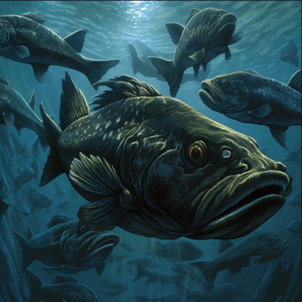
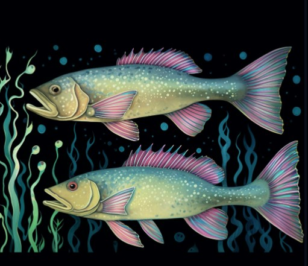

Maia Sosa Kapur
About
Blog Posts
Publications
Google Scholar
Categories
All
(10)
Posts
Linking Spatial Processes to Covarying Paramters
There are lots of real-life processes that we know are driven by the environment, and exhibit covariance amongst the parameters we use to model them. People interested in…
MSK
Mar 11, 2025
Ageing Error Matrices - some notes
I revisit the inclusion of ageing error matrices frequently enough that I wanted to consolidate some notes here. None of this is new information; it is a resource for myself…
MSK
Jun 8, 2023
Leveraging try_again() for error catching in MSEs
This post is not a full breakdown of how to structure code for Management Strategy Evaluation (MSE) work. I’m certainly not a pro software engineer. Instead, I was pleased…
MSK
Dec 10, 2022

Length-based Processes in an Age-Structured Model
This is in the category of “stuff I thought I understood” until I didn’t.
MSK
May 2, 2022
How I Keep Up With the Literature
My lab recently had a meeting where we discussed the nuts & bolts of performing a peer-review for a journal article, which got everyone talking about their preferred methods…
MSK
Feb 10, 2021
How Do Recruitment Deviations Work?
For an in-depth description of the theory and math behind recruitment deviations in assessment models, check out: Methot, R.D., Taylor, I.G., Chen, Y., 2011.
Adjusting for…
MSK
Jan 25, 2021

Why do we use ln(19)?
Have you ever noticed that sneaky
\(log(19)\)
in your logistic equation for maturity or selectivity? What is up with that?
MSK
Jan 4, 2021
How I studied for my PhD General Exam
I am finally a PhD Candidate! You may want to check out my “How I studied for my PhD Quals” post, which detailed my prep for a 5-day written examination I took in December.…
MSK
Jun 4, 2020
Some Algebra for Equilibrium Recruitment
I often find myself revisiting the various “re-arrangements” of the Beverton-Holt stock-recruitment relationship, particularly when moving between equilibrium quantities. I…
MSK
May 21, 2020
How I studied for my PhD qualifying exam
Yay, I got a high pass on my exam (now back to the things I neglected Autumn quarter). Before I disappear, I wanted to share how I went about studying for my exam, in hopes…
MSK
Jan 1, 2020
No matching items